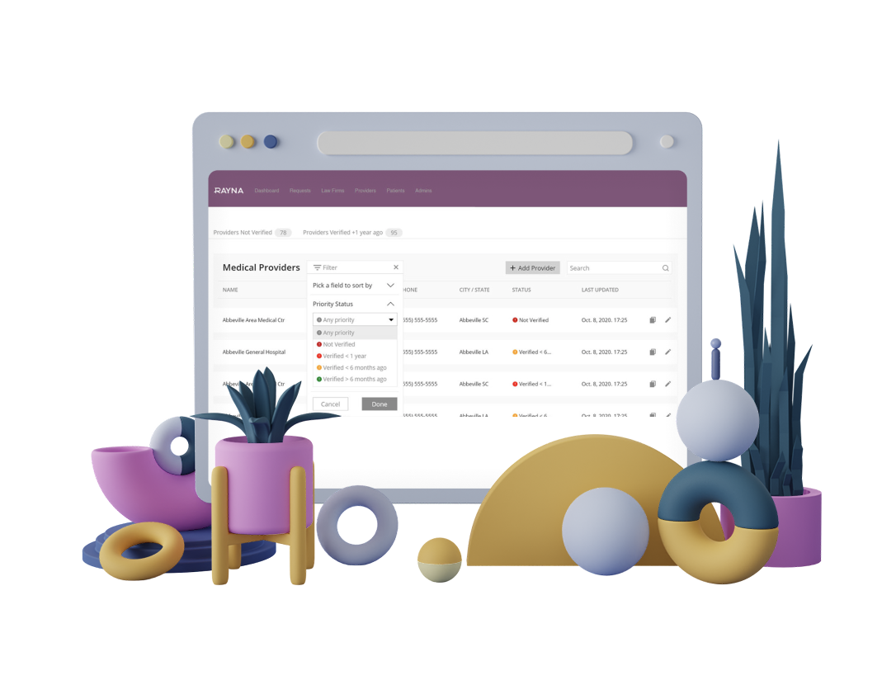
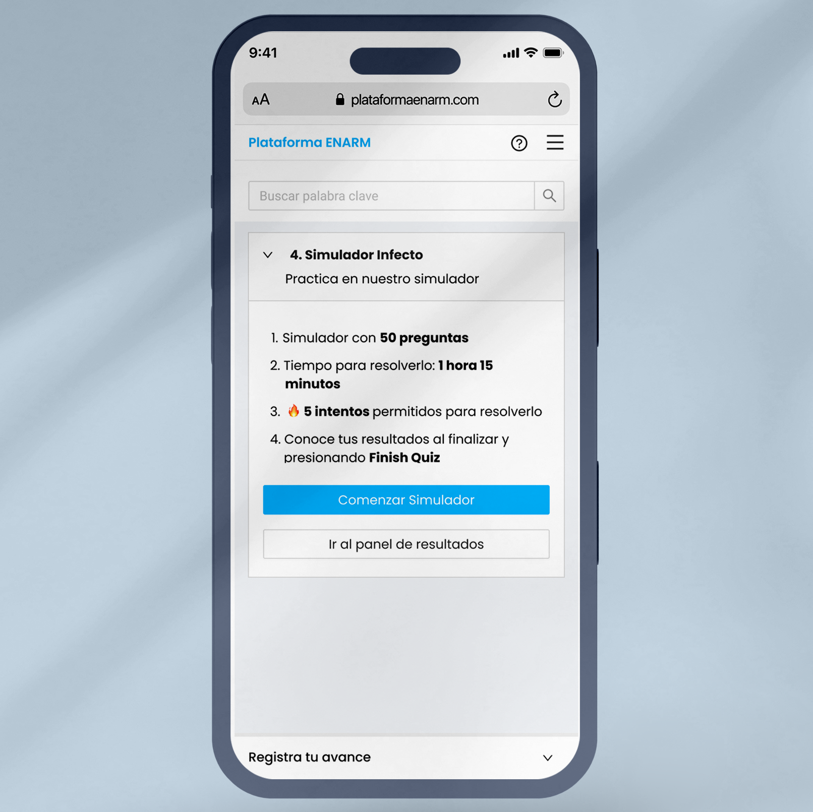
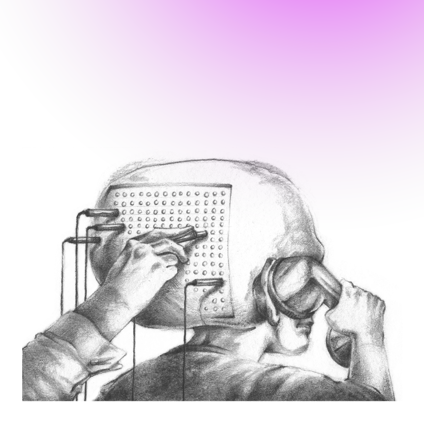

Building meaningful experiences that bring
business impact.
Product & UX Designer with 7+ years of experience crafting digital products for SaaS, B2C, and B2B companies — bridging user needs and business goals from discovery to delivery.
Selected Works
01 — 06
Safari Nursery
Driving retention through emotional engagement: +3.5pp Day 1 Retention · 65–70% Sustained Engagement.

Bounce: The Bag Storage
A payment flow audit that identified friction points and delivered an 8% lift in conversion rate.

Turn Research into Growth
A CRO Audit that uncovered a core communication problem and built a roadmap to fix it.

UX Intervention for a Legal Provider Web App
How a UX-led approach resolved client friction and turned a stalled legal tech project into a successful delivery.

ENARM: Plataforma de Estudio de Especialidades Médicas
Cómo un enfoque UX transformó una plataforma obsoleta en una experiencia de aprendizaje flexible y autogestionable.

The Lever: A Website Redesign
A visual overhaul for a nonpartisan investigative news outlet.
Designing for clarity, trust, and growth.
Discovery & Strategy
I start with questions, not screens — defining the right problem before designing the solution.
Growth & Adaption
I design for growth — turning data into decisions, retention, and engagement, powered by AI where it adds value.
Trust & Clarity
I design for trust — making complex information clear, actionable, and transparent.
"... What truly stands out about Laura is her ability to seamlessly merge creativity with strategic thinking. She doesn't just design, she crafts experiences that not only look amazing, but also convert."
Francisco Mastromauro
Webflow Expert & Enterprise Partner